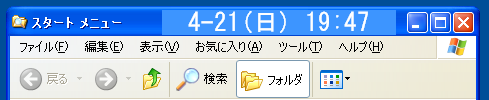
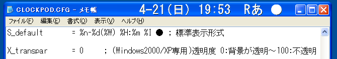
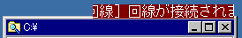
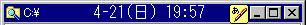
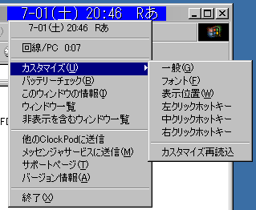

Windows95/98/Me/NT4.0/2000/XP
↑Clock Pod
●初期カスタマイズ

●透明化カスタマイズ(2000,XP限定)、「●」は透明化した部分がクリックできなくなるためのボタン代わり

●テロップ表示例。タイトルバーに入りきらない大きさのため、自動でタイトルバーの上に移動している

●ウィンドウをクラシック表示＋グラデーションなしにすることで、透明化しなくても一体に見えるようになる。
最小化ボタンの左にあるのは WXG(IME) のナビチップ

●右クリックによるメニュー

Copyright(c)1997-2020 TORO/高橋 良和 E-mail: toroid.jp @gmail.com